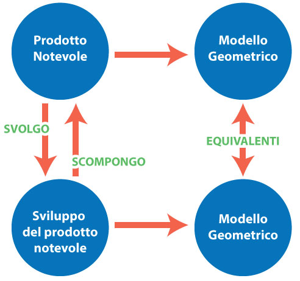

Se il tuo problema sono i prodotti notevoli e le scomposizioni in fattori dei polinomi, in questo sito troverai la soluzione: un metodo pratico per capire e memorizzare facilmente tutte le formule.
| Prodotti notevoli - Scomposizioni | Polinomi - Svolgimenti dei prodotti | |||
|---|---|---|---|---|
| prodotto di un monomio per un binomio somma | X(A + B) | = | AX + BX | binomio scomponibile raccogliendo il fattore comune |
| prodotto di due binomi somma | (A + B)(X + Y) | = | AX + AY + BX + BY | quadrinomio scomponibile nel prodotto di due binomi |
| prodotto di un binomio somma per la sua differenza | (A + B)(A – B) | = | A2 – B2 | differenza di due quadrati |
| quadrato di un binomio somma | (A + B)2 | = | A2 + 2AB + B2 | trinomio quadrato del binomio somma |
| quadrato di un binomio differenza | (A - B)2 | = | A2 + B2 - 2AB | trinomio quadrato del binomio differenza |
| cubo di un binomio somma | (A + B)3 | = | A3 + 3A2B + 3AB2 + B3 | quadrinomio cubo del binomio somma |
| cubo di un binomio differenza | (A - B)3 | = | A33 + 3AB2 - 3A2B - B3 | quadrinomio cubo del binomio differenza |
| binomio somma per il suo falso quadrato | (A + B)(A2 + B2 – AB) | = | A3 + B3 | somma di due cubi |
| binomio differenza per il suo falso quadrato | (A - B)(A2 + B2 + AB) | = | A3 - B3 | differenza di due cubi |
| prodotto di due binomi pari a un trinomio particolare | (X + A)(X + B) | = | X2 + (A + B)X + AB | trinomio particolare |
Per scomporre in fattori un polinomio bisogna trasformarlo in un prodotto, ma questa non sempre è un’impresa facile perché le formule da ricordare sono tante e alcune davvero complesse.
C’è però un sistema per rendere tutto più facile, veloce, e persino divertente.
Il segreto sta nel tradurre i polinomi in figure geometriche in modo che ogni formula diventi l’equivalenza tra due modelli: uno corrispondente al polinomio e l’altro alla sua scomposizione in fattori.

Per costruire i modelli, conviene usare degli oggetti concreti: stecchini, quadrotti e cubetti. Con questo semplice accorgimento le formule di scomposizione in fattori dei polinomi diventano facili da capire e da ricordare, senza rischiare di confonderle una con l’altra.
Una volta appreso questo metodo attraverso le spiegazioni che seguono, potrai consolidare le tue conoscenze giocando con "Rubicon River" l'ausilio didattico per imparare la scomposizione dei polinomi in fattori giocando.
Ogni monomio assume valore diverso a seconda del valore che attribuisci alle sue lettere. I monomi che trovi nelle formule di scomposizione in fattori dei polinomi possono essere di primo, secondo o terzo grado.
I monomi di primo grado o lineari contengono una sola lettera a, b, x, y e li puoi rappresentare con degli stecchini da usare come unità di misura. Per esempio: se a=1, userai uno stecchino; se a=2, userai due stecchini; se a=3, userai tre stecchini.
I monomi di secondo grado possono essere del tipo: a2, b2, o qualunque altra lettera al quadrato, hanno come modelli dei quadrati. Per esempio: se a=1, a2 sarà un quadrato di lato 1; se a=2, a2 sarà un quadrato di lato 2; se a=3, a2 sarà un quadrato di lato 3.
I monomi di secondo grado possono anche essere il prodotto di due lettere di valore differente come ab, xy e in questo caso hanno la forma di rettangoli. Per esempio: se a=1 e b=2, ab è il rettangolo 1x2; se a=2 e b=3, ab è il rettangolo 2x3; se a=3 e b=4, ab è il rettangolo 3x4.
I monomi di terzo grado contengono una lettera alla terza, come a3, b3 e hanno la forma di cubi.
Per esempio: se a=1, a3 è un cubo di lato 1; se a=2, a3 è un cubo di lato 2; se a=3, a3 è un cubo di lato 3.
I monomi di terzo grado possono essere il prodotto di due lettere di valore differente come a2b e in questo caso hanno la forma di parallelepipedi a base quadrata. Per esempio: se a=1 e b=2, a2b è il parallelepipedo 1x1 alto 2; se a=2 e b=3, a2b è il parallelepipedo 2x2 alto 3.
I monomi di terzo grado possono essere il prodotto di tre lettere di valore differente come il monomio abx e in questo caso hanno la forma di parallepipedi a base rettangolare. Per esempio: se a=1, b=2 e x=3, abx è il parallelepipedo 1x2 alto 3; se a=2, b=3 e x=4, abx è il parallelepipedo 2x3 alto 4.
I binomi che trovi nelle formule di scomposizione in fattori dei polinomi possono essere di primo, secondo e terzo grado. Di primo grado, è per esempio il binomio somma a+b che puoi rappresentare con degli stecchini: se a=2 e b=1, a+b ha come modello 3 stecchini; se a=2 e b=3, a+b ha come modello 5 stecchini. Anche il binomio differenza a-b è un binomio di primo grado. Se a=2 e b=1, a-b è uno stecchino; se a=3 e b=2, a-b è uno stecchino; se a=4 e b=1, a-b sono tre stecchini.
a2+b2 è un binomio di secondo grado; se a=2 e b=1, a2+b2 è un quadrato di lato 2, al quale si aggiunge un quadrato di lato 1; se a=3 e b= 2, a2+b2 è un quadrato di lato 3 al quale si aggiunge un quadrato di lato 2.
Anche a2-b2 è un binomio di secondo grado; se a=2 e b=1, a2-b2 è un quadrato di lato 2 dal quale viene tolto un quadrato di lato 1; se a=3 e b=2, a2-b2 è un quadrato di lato 3 dal quale viene tolto un quadrato di lato 2.
a3+b3 è un binomio di terzo grado; se a=2 e b=1, a3+b3 è un cubo di lato 2 al quale aggiungiamo un cubo di lato 1; se a=3 e b=2, a3+b3 è un cubo di lato 3 al quale aggiungiamo un cubo di lato 2.
La formula di scomposizione in fattori più semplice è quella che va sotto il nome di “raccoglimento del fattore comune”:
X(A+B) è la scomposizione in fattori di AX+BX.
Hai notato che l’ho scritta usando lettere maiuscole e non minuscole? L’ho fatto per ricordare che queste formule funzionano anche se al posto delle lettere ci sono delle espressioni più complesse.
X(A+B) è un rettangolo di lati X e A+B; se diamo a X valore 2, ad A valore 3 e a B valore 1, X(A+B) è un rettangolo di lati: 2 e 4. Il modello di AX+BX è invece una figura composta dal rettangolo AX di lati 3 e 2, al quale aggiungiamo il rettangolo BX di lati 1 e 2.
L’identità AX+BX = X(A+B) è vera non solo per la proprietà distributiva del prodotto rispetto alla somma, ma anche perché i due modelli geometrici che abbiamo costruito hanno la stessa superficie o, come si dice, sono equivalenti e questo risultato vale qualsiasi siano i valori che attribuiamo alle lettere A, B e X.
(A+B)(X+Y) è un rettangolo di lati A+B e X+Y; se A vale 1, B vale 3, X vale 2 e Y vale 4, il rettangolo avrà lati 4 e 6.
Il modello del quadrinomio AX+AY+BX+BY è invece una figura composta da quattro rettangoli:
L’identità AX+AY+BX+BY = (A+B)(X+Y) è vera non solo perché svolgendo il prodotto (A+B)(X+Y) si ottiene il quadrinomio AX+AY+BX+BY, ma anche perché i due modelli geometrici hanno la stessa area o, come si dice, sono equivalenti e ciò vale qualunque siano i valori che attribuiamo alle lettere A, B, X e Y.
Ed eccoci alla scomposizione in fattori della differenza di due quadrati.
(A+B)(A-B) è la scomposizione in fattori del binomio A2-B2 . Il modello del prodotto (A+B)(A-B) è un rettangolo di lati A+B e A-B;
se A vale 4 e B vale 3, il rettangolo ha lati 7 e 1, quindi area pari a 7 quadratini unitari. Il modello di A2-B2 è una figura costituita da un quadrato di lato 4 dal quale si toglie un quadrato di lato 3; anche questa figura ha area pari a 7 quadratini.
L’identità A2-B2 = (A+B)(A-B) è vera non solo perché moltiplicando (A+B) per (A-B) si ottiene il binomio A2-B2,
ma anche perché, come hai visto, le due figure che abbiamo costruito hanno la stessa area, quindi sono equivalenti.
Vediamo ora la regola del quadrato di un binomio somma: (A+B)2 è la scomposizione in fattori del trinomio A2+2AB+B2.
Se diamo ad A valore 2 e a B valore 3, (A+B)2 sarà un quadrato di lato 5. Il modello geometrico di A2+2AB+B2 è invece una figura composta da un quadrato di lato 2, due rettangoli di lati 2 per 3 e un quadrato di lato 3.
L’identità A2+ 2AB+B2 = (A+B)2 è vera non solo perché moltiplicando A+B per se stesso si ottiene il trinomio A2+ 2AB+B2, ma anche perché le due figure geometriche che abbiamo costruito hanno la stessa area, pari a 25 quadretti.
Ecco la regola del quadrato di un binomio differenza: (A-B)2 è la scomposizione in fattori del trinomio A2+B2-2AB.
Se diamo ad A valore 3 e a B valore 1, (A-B)2 sarà un quadrato di lato 2. Il modello geometrico di A2+B2-2AB è un quadrato di lato 3, al quale aggiungiamo un quadrato di lato 1 e poi sottraiamo due rettangoli di lati 1x3. In questo modo si ottiene ancora il quadrato di lato 2.
L’identità A2+B2-2AB = (A-B)2 è vera non solo perché moltiplicando A-B per se stesso si ottiene il trinomio A2+B2-2AB, ma anche perché, come abbiamo visto, i due modelli geometrici che abbiamo costruito sono equivalenti.
Ecco la regola del cubo di un binomio somma: (A+B)3 = A3+3A2B+3AB2+B3
Se A=2 e B=1, il cubo di A+B è un cubo di lato 3; A3 è un cubo di lato 2; 3A2B sono 3 parallelepipedi di base quadrata 2x2 e altezza 1; 3AB2 sono 3 parallelepipedi di base 1x1 e altezza 2; B3 è un cubetto.
E’ possibile dimostrare che A3+3A2B+3AB2+B3 è un solido equivalente al cubo di lato 3, infatti con semplici spostamenti, è possibile ottenere proprio il cubo di lato 3. Dunque (A+B)3 è la scomposizione in fattori di A3+3A2B+3AB2+B3.
Questa è la regola di un cubo del binomio differenza: (A-B)3 = A3+3AB2-3A2B-B3
Se A=3 e B=1, il cubo di A-B è un cubo di lato 2; A3 è un cubo di lato 3; 3AB2 sono tre parallelepipedi 1x1 di altezza 3; a questo solido dobbiamo togliere tre parallelepipedi di superficie 3x3 e altezza 1 e un cubetto di lato 1, ottenendo un solido equivalente al cubo di lato 2, perchè infatti con semplici spostamenti si ottiene proprio il cubo di lato 2.
Il prodotto tra un binomio somma (A+B) e il suo falso quadrato, che chiamiamo così perché al posto di '+2AB' c’è '–AB', è la scomposizione in fattori della somma di due cubi.
Se A=2 e B=1, A3 è un cubo di lato 2 e B3 è un cubo di lato 1. A2+B2 è una figura costituita da un quadrato di lato 2, al quale aggiungiamo un quadrato di lato 1; a questa figura dobbiamo togliere AB e poi dobbiamo moltiplicare per una altezza pari ad A+B, quindi 3. Questo solido è equivalente al cubo di lato 2, infatti possiamo ottenere da esso proprio il cubo di lato 2 al quale aggiungiamo il cubo di lato 1.
Il prodotto tra il binomio differenza (A-B) e il suo falso quadrato, che chiamiamo così perché al posto di '-2AB' c’è '+AB', è la scomposizione in fattori della differenza di due cubi.
Se A=3 e B=2, A3–B3 è pari a un cubo di lato 3 dal quale è stato tolto un cubo di lato 2.
A2+B2+AB è un parallelepipedo di altezza 1 e superficie di base equivalente a un quadrato di lato 3, al quale aggiungiamo un quadrato di lato 2 e un rettangolo di lati 2 e 3.
I due solidi sono equivalenti, infatti è possibile ottenere da uno l'altro, con semplici spostamenti.
Il prodotto tra due binomi che iniziano con la stessa lettera, in questo caso X e hanno come termini noti due numeri A e B, è la scomposizione in fattori di un trinomio particolare perchè è di secondo grado, ha come primo coefficiente 1, come secondo coefficiente la somma dei due numeri A e B e come termine noto il prodotto dei due numeri A per B.
Se è X=1, A=2 e B=3, (X+A)(X+B) è un rettangolo di lati 3 e 4.
X2 è un quadretto di lato 1; (A+B)X è un rettangolo di lati 1x5; AB è un rettangolo di lati 2x3.
Le due figure sono equivalenti infatti, da una si ottiene l'altra, con semplici spostamenti.
Se hai apprezzato queste spiegazioni, devi sapere che esse sono alla base di un gioco creato appositamente per facilitare la comprensione e la memorizzazione delle formule appena viste. Per maggiori informazioni sul gioco "Rubicon River" visita RubiconRiverGame.com.